Peces
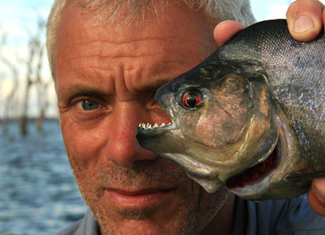
Piraña
Son peces de agua dulce de Sudamérica con dientes afilados, mandíbulas muy fuertes y fama de feroces
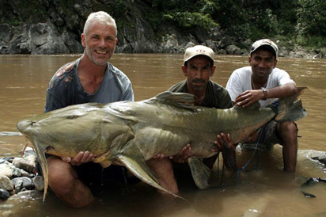
Pez gato goonch
Es un gigantesco y temido bagre de agua dulce famoso por su gran tamaño, su aspecto amenazante y las leyendas sobre su gusto por la carne humana
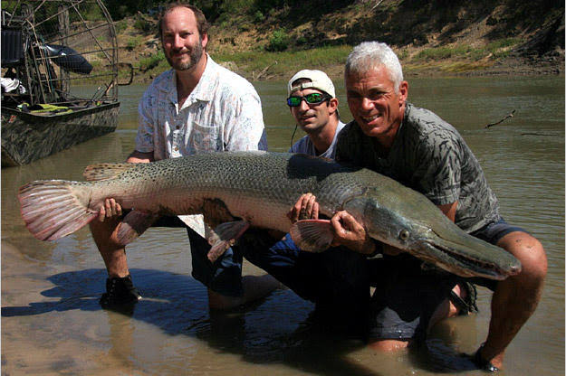
Pez caiman
También llamado pez cocodrilo o pejelagarto, es un fósil viviente gigante que puede respirar aire, medir hasta 3 metros y sobrevivir horas fuera del agua
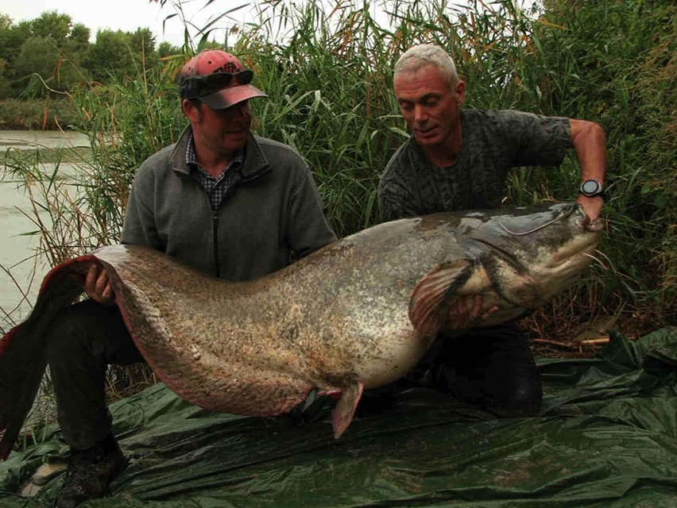
Siluro
Es el pez de agua dulce más grande de Europa, conocido por cazar palomas en vuelo, no tener escamas y alcanzar los 3 metros de longitud
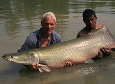
Arapaima
Es uno de los peces de agua dulce más grandes del mundo, famoso por su capacidad de respirar aire, sus escamas blindadas y su origen prehistórico
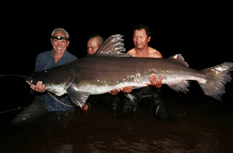
Piraiba
Es el bagre o pez de cuero más grande de la cuenca amazónica, destacando por un tamaño gigante que supera los 3 metros de largo, un peso que puede alcanzar hasta los 200 kg o más y un enorme apetito y hábitos migratorios extremos de miles de kilómetros
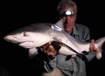
Tiburon toro juvenil
Se distingue de los adultos por tener manchas oscuras en las aletas, nacer en aguas de poca profundidad y poseer una alta capacidad para tolerar el agua dulce
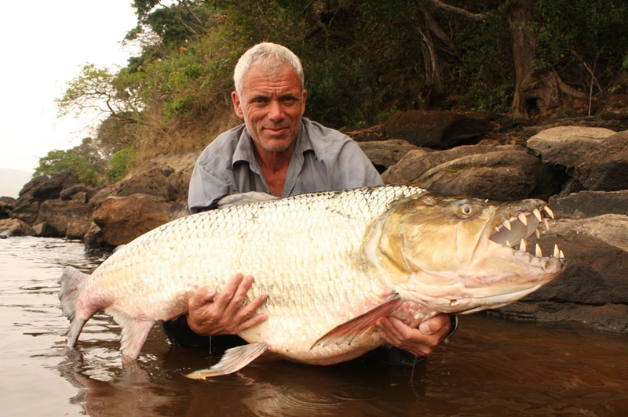
Pez tigre goliat
Es un superdepredador de agua dulce de África que destaca por sus 32 dientes afilados como cuchillos, su gran tamaño de hasta 1,80 metros y un peso superior a los 50 kg
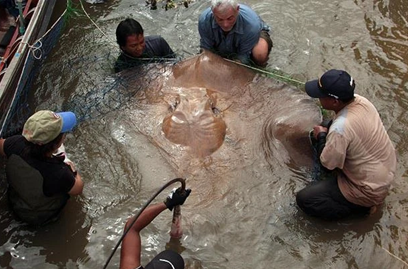
Raya
Son peces sin huesos duros, parientes cercanos de los tiburones, que se esconden en la arena del fondo marino y tienen un aguijón con veneno
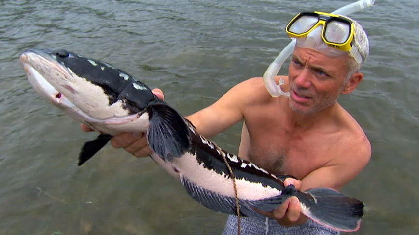
Channa
Conocidos popularmente como cabezas de serpiente, destacan por su capacidad única de respirar aire fuera del agua, su resistencia extrema y sus habilidades de depredación
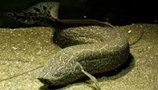
Pez pulmonado africano
Es un animal fascinante capaz de vivir sin agua, respirar aire y entrar en un sueño profundo por meses
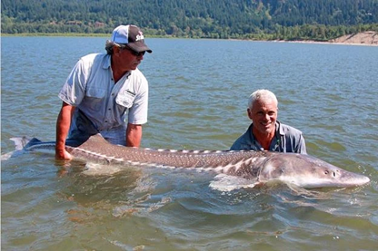
Esturbion blanco
Es un fósil viviente, un gigante de agua dulce y una especie de larga vida
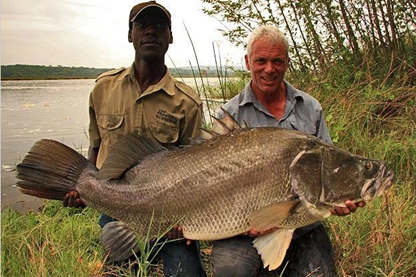
Perca del Nilo
Es un colosal pez de agua dulce africano, famoso por su tamaño gigante, su impacto ecológico devastador dado a su boca enorme y dientes fuertes para cazar por sorpresa a otros peces, y su rol en el fraude gastronómico
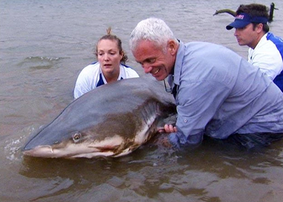
Tiburon toro adulto
Destaca por su capacidad única para nadar en agua dulce, su potente fuerza de mordida y su origen caníbal
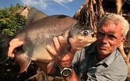
Pacu
Destaca por sus dientes planos muy parecidos a los de las personas, su dieta a base de frutos y su fama mundial de morder partes íntimas
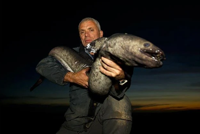
Anguila
Son peces fascinantes y misteriosos. Destacan porque nacen en el mar, respiran a través de la piel y su sangre cruda es tóxica. Tras vivir años en ríos, vuelven al mar para procrear y mueren de cansancio. Todas las anguilas europeas nacen en el lejano Mar de los Sargazos
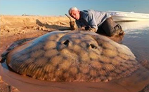
Raya de río de cola corta
Conocida también como chucho de río, es el pez cartilaginoso de agua dulce más grande del mundo, capaz de superar los 200 kg y medir hasta 180 cm, destacando por sus migraciones de larga distancia, su reproducción vivípara y su defensa con aguijón
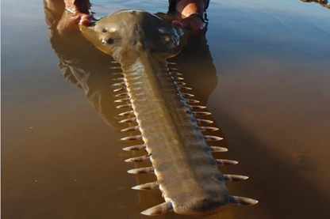
Pez sierra
No es un tiburón sino una raya, usa su hocico para cazar con electricidad y está en peligro grave
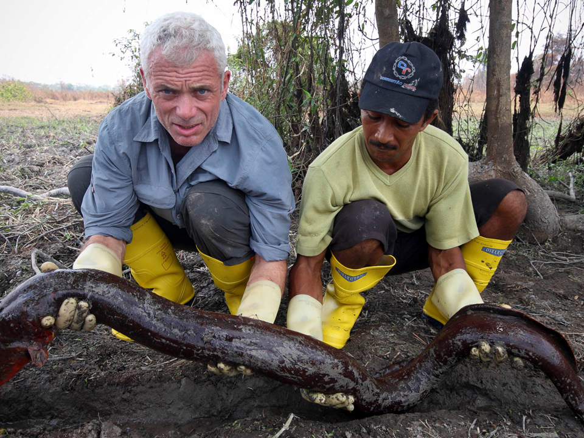
Anguila electrica
No son anguilas reales sino que están más cerca de los bagres y peces cuchillo, producen hasta 860 voltios y respiran aire directamente de la superficie
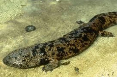
Salamandra gigante japonesa
Es uno de los anfibios más grandes del mundo, famoso por ser un fósil viviente, respirar a través de su piel y vivir por más de medio siglo
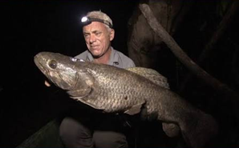
Tararira
También llamada tarucha, es un pez cazador muy voraz, con dientes filosos y la capacidad de respirar aire fuera del agua
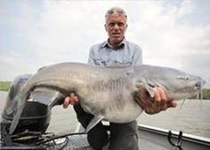
Bagre azul
Es el mayor de los bagres de Norteamérica, destacando por su gran tamaño, su cola ahorquillada y su potente sentido del olfato distribuido por todo su cuerpo
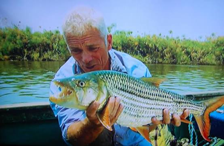
Pez tigre africano
Es un temido depredador de agua dulce famoso por sus 32 dientes afilados como cuchillos, su gran tamaño y su agresividad en los ríos del continente
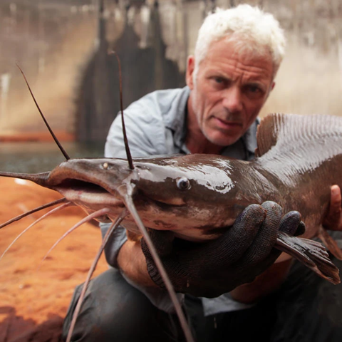
Bagre vundu
Es un gigante de agua dulce africano conocido por su gran tamaño, su piel sin escamas y su enorme resistencia fuera del agua
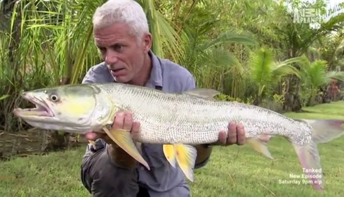
Carite
Destaca por ser un veloz nadador de aguas cálidas, poseer dientes muy afilados y formar grandes grupos
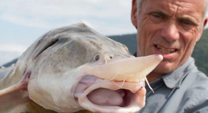
Esturion kaluga
Es el pez de agua dulce más grande del mundo, famoso por ser un gran depredador y producir uno de los caviares más caros
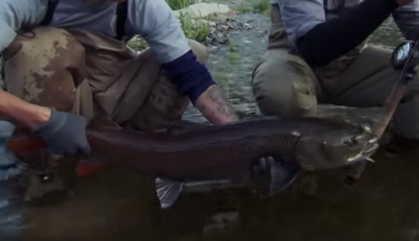
Salmon siberiano
También llamado amur blanco o sogyo, no es un salmón real, sino un gran pez de la familia de las carpas originario del río Amur en Asia
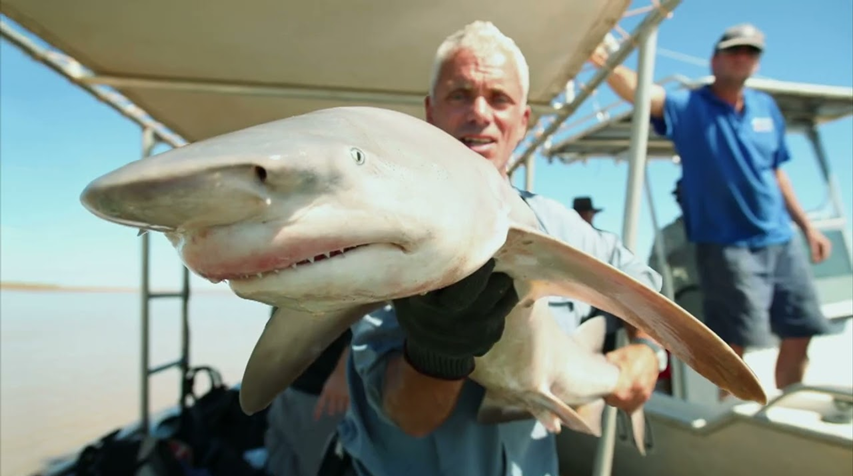
Tiburon glyphis
Conocidos como tiburones de río o de agua dulce, son animales muy raros, poco estudiados y en peligro crítico
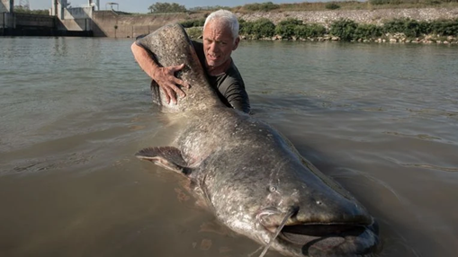
Siluro gigante europeo
Es el pez de agua dulce más grande de Europa, no tiene escamas sino que está cubierto de una capa de mucosa muy resbaladiza que dificulta sujetarlo y es capaz de cazar fuera del agua
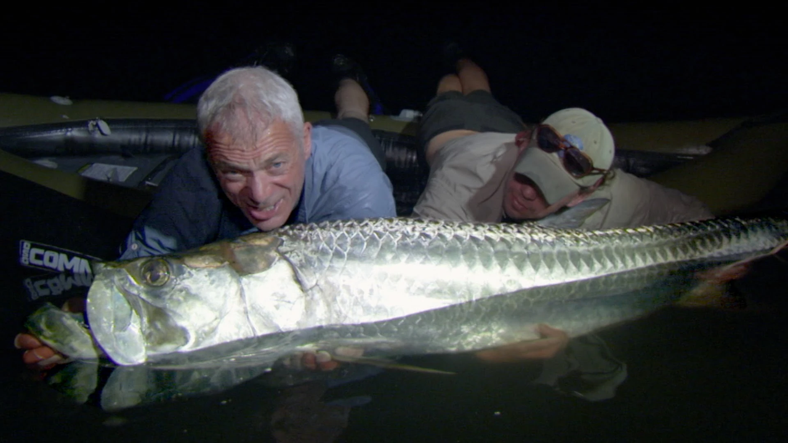
Sabalo
Destaca por ser el más abundante de la cuenca del Plata, tragar fango para alimentarse y respirar aire gracias a su vejiga natatoria
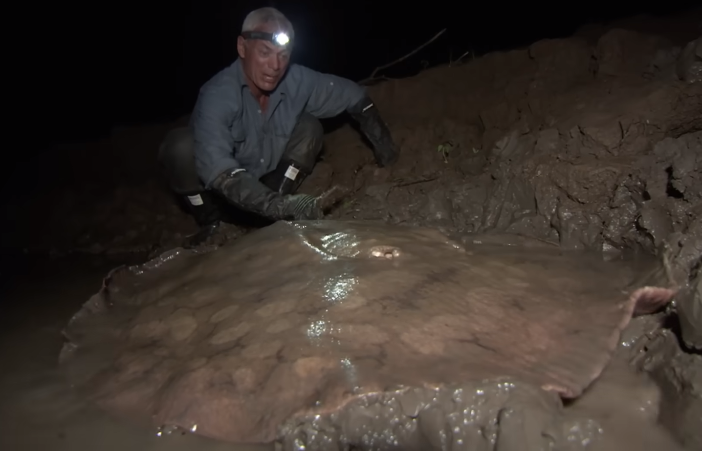
Raya disco
Son animales fascinantes de cuerpo plano y redondo, conocidos por su gran belleza, sus particulares adaptaciones y por ser considerados los reyes del agua dulce y salada
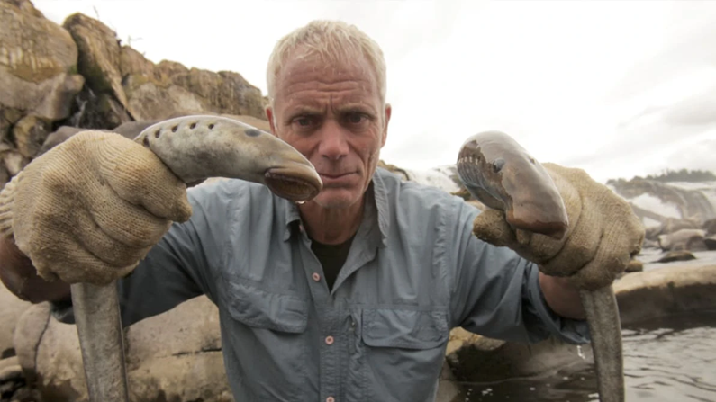
Lamprea marina
Son animales prehistóricos fascinantes conocidos como vampiros acuáticos, con más de 360 millones de años de historia, sin mandíbula y con un cuerpo sin escamas
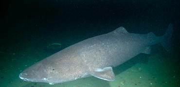
Tiburon de Groenlandia
Es el vertebrado más longevo del planeta, destacando por vivir más de 400 años, crecer muy lento y tener parásitos en los ojos
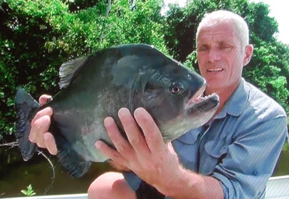
Piraña negra
Es la especie de piraña más grande conocida, con una poderosa mordida y un comportamiento más solitario que el de otros peces de su familia
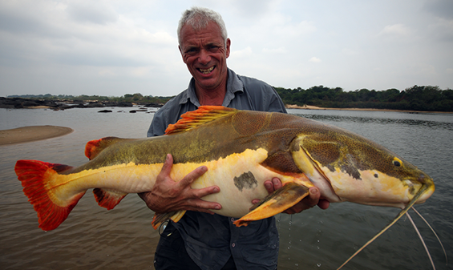
Bagre de cola roja
También conocido como pez gato de cola roja, destaca por su enorme tamaño, su llamativa aleta roja y sus hábitos nocturnos. Es nativo de las cuencas del Amazonas y del Orinoco en Sudamérica
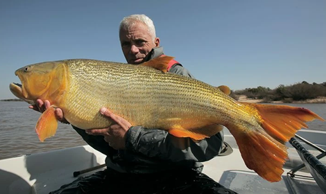
Dorado
Destaca por su memoria de tres segundos, su capacidad de cambiar de color y su larga vida en buenas condiciones
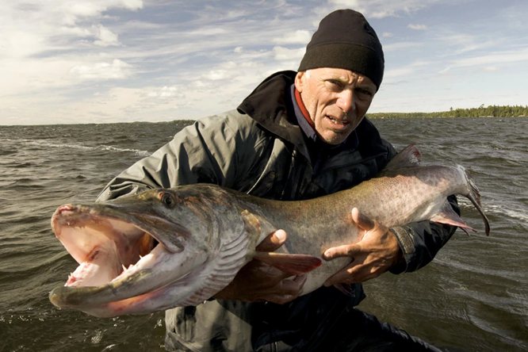
Lucio americano
Es un pequeño pez depredador de agua dulce que destaca por su tamaño compacto, su gran resistencia y su aparición en la cultura popular de los videojuegos
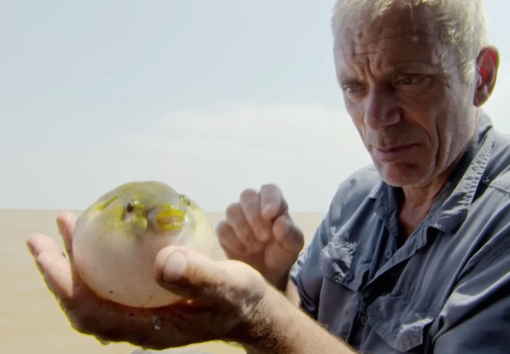
Pez globo
Destaca por su capacidad de inflarse mediante la ingestión rápida de agua o aire, un potente veneno mortal llamado tetrodotoxina y un pico duro formado por dientes fusionados
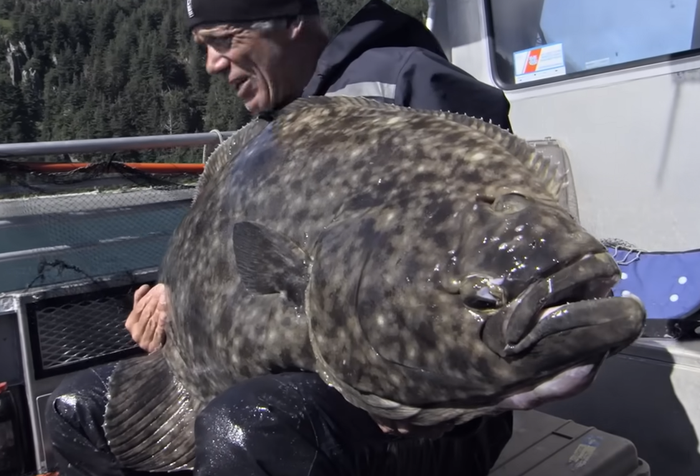
Fletan
Es el pez plano más grande del océano, puede vivir más de 50 años y su nombre en inglés significa "pez plano sagrado"
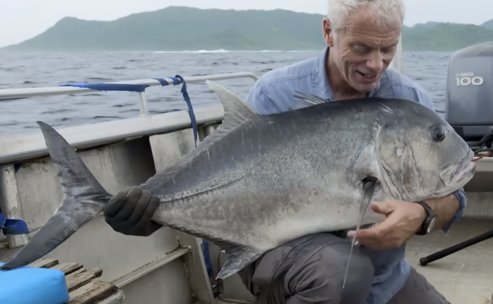
Jurel gigante
Destaca por cazar aves en pleno vuelo, alcanzar hasta 170 cm de largo y 80 kg, y su carne puede ser tóxica
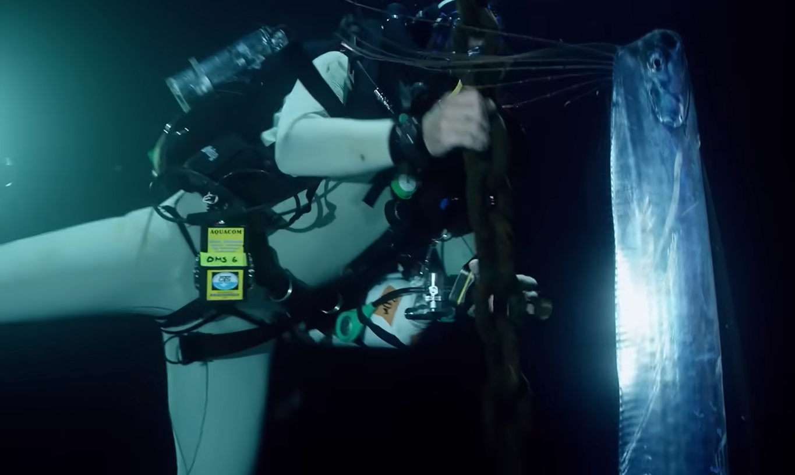
Pez remo
Es el pez óseo más largo del mundo pudiendo llegar a medir hasta 11 metros de largo, un gigante abisal e inofensivo rodeado de mitos apocalípticos. Se cree popularmente que si aparece en la costa, anunciará un terremoto o un tsunami
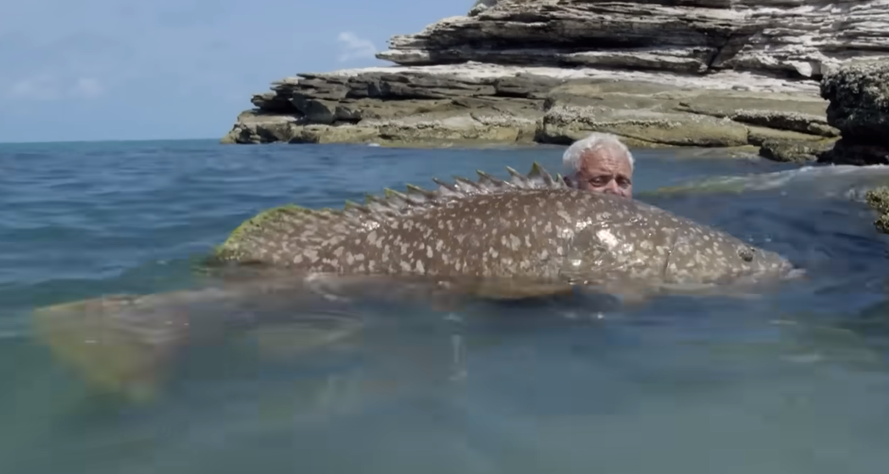
Mero
Destaca por su capacidad de cambiar de sexo, su enorme tamaño y su vida solitaria en cuevas rocosas
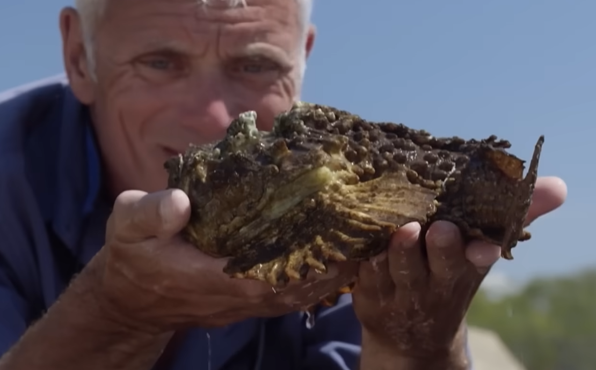
Pez piedra
Es el pez más venenoso del mundo, destacando por su camuflaje extremo y un veneno letal similar al de la cobra
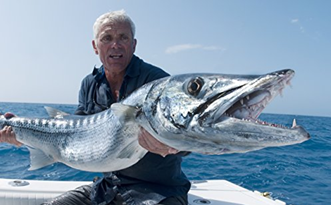
Barracuda
Son peces depredadores marinos famosos por su velocidad explosiva, su cuerpo en forma de torpedo y sus afilados dientes
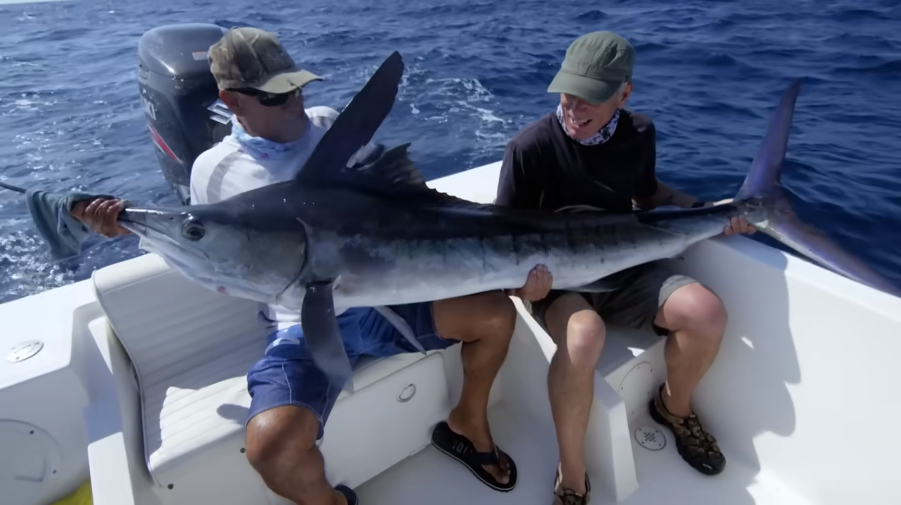
Marlin rayado
Es un fascinante depredador marino conocido por cambiar el color de sus rayas al cazar, nadar a velocidades extraordinarias y cazar en equipo de forma coordinada
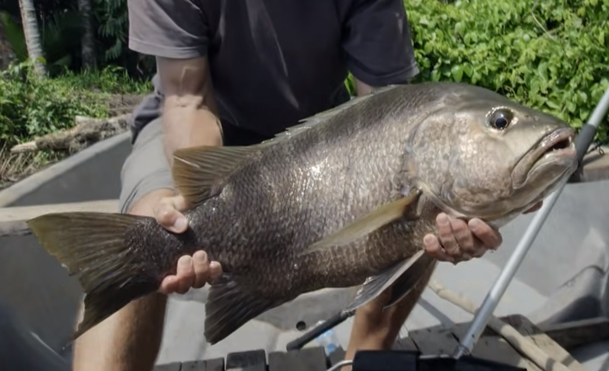
Lobina negra
Destaca por su gran voracidad, papel parental del macho y origen de su nombre, se llama así por su gran hambre y por cazar en grupo como los lobos
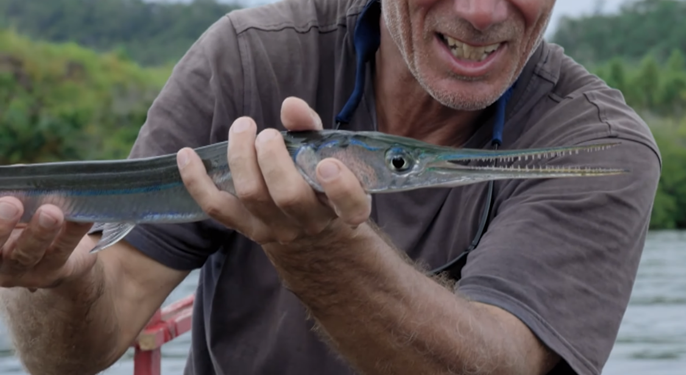
Aguja
Destaca por su cuerpo muy alargado, un pico lleno de dientes afilados y su parentesco con los caballitos de mar
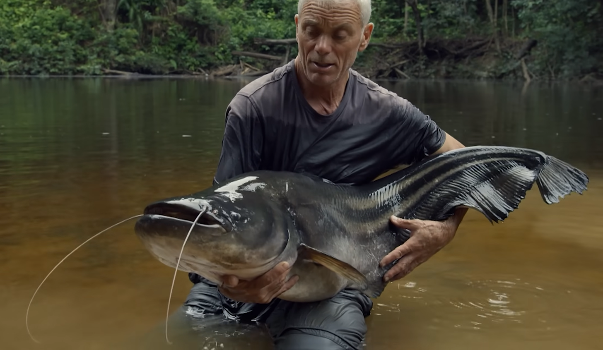
Bagre de agua dulce
Destaca por sus largos bigotes sensoriales, su piel sin escamas y su habilidad para sobrevivir en el fango. Existen más de 3,000 especies en el mundo con características muy particulares